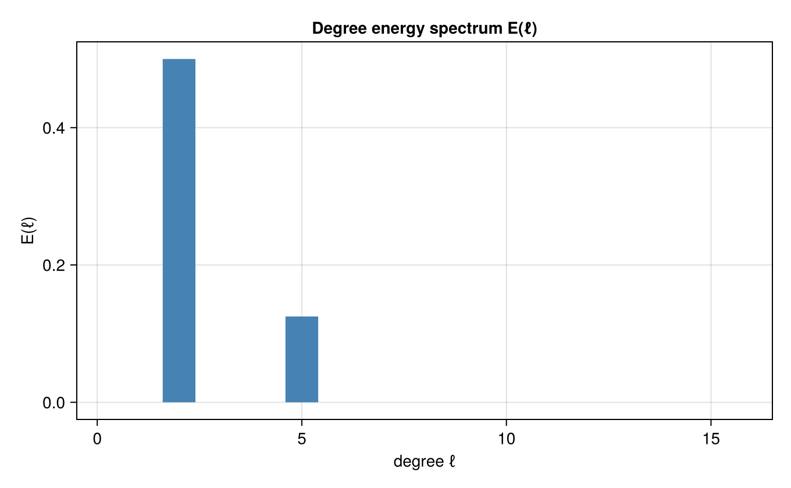

Spherical harmonic spectra
Project a field on the sphere onto spherical harmonics and read off the degree (ℓ) energy spectrum. We synthesize a field from known modes Y₂¹ and Y₅⁻³ on a Clenshaw–Curtis grid and recover them with the structured SHTBackend.
using FlowFieldSpectra: FlowFieldSpectra as FFS
using FastSphericalHarmonics: FastSphericalHarmonics as FSH
using CairoMakie: CairoMakie as Mke
lmax = 16
Nθ = lmax + 1
Nφ = 2 * lmax + 1
pts = FSH.sph_points(Nθ)
θnodes = vec([θ for θ in pts[1], φ in pts[2]])
φnodes = vec([φ for θ in pts[1], φ in pts[2]])
C = zeros(Nθ, Nφ)
C[FSH.sph_mode(2, 1)] = 1.0
C[FSH.sph_mode(5, -3)] = 0.5
f = vec(FSH.sph_evaluate(C))
grid = FFS.StructuredSphericalGrid(θnodes, φnodes)
coeffs, _ = FFS.calculate_spectrum(FFS.SHTBackend(), grid, (f,), (Nθ, Nφ))
deg, E_l = FFS.spherical_energy_spectrum(coeffs)
fig = Mke.Figure(size = (680, 420))
ax = Mke.Axis(fig[1, 1]; title = "Degree energy spectrum E(ℓ)", xlabel = "degree ℓ", ylabel = "E(ℓ)")
Mke.barplot!(ax, deg, E_l; color = :steelblue)
Mke.xlims!(ax, -0.5, lmax + 0.5)
fig
Energy appears only at degrees ℓ = 2 and ℓ = 5, as expected. Scattered points on the sphere are handled the same way with ScatteredSphericalGrid and the NUFSHTBackend (use a well-distributed set such as a Fibonacci sphere so the least-squares solve is well-conditioned).